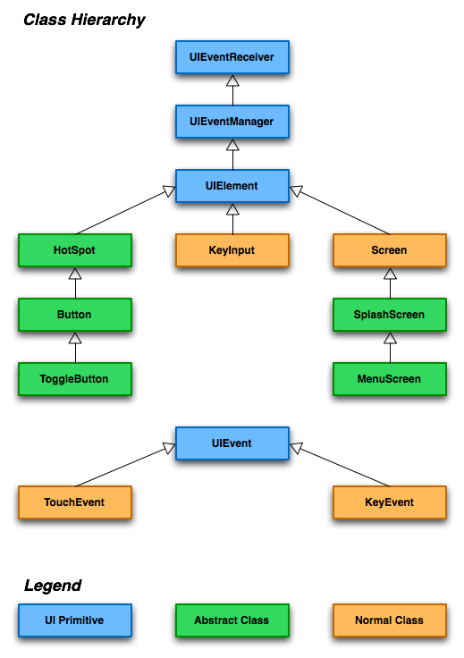

About
The Patater GUI Kit is an open source (released under MIT license) GUI
kit for the Nintendo DS. It is a basic framework for building a GUI. It
is designed to help developers streamline the creation of basic menus
and other similar components. It also includes a separate library with
a few useful functions, such as vblanksleep,
waitfortouch, and dmafill. It was written in
C++.
Applications
A touch-based adventure game is currently in development, by Patater, which utilizes this GUI Kit. Upon release of the game, and after enough people have beaten the game (to avoid spoiling), the source will be released showing how to use the GUI Kit in a useful manner.
The adventure game is undergoing code cleanup, though the story and graphics are still all complete.
More than just touch-based adventure games and menus will be possible, however. For example, a dating simulator which presents multiple choice responses to the environment would be extremely easy to develop with the Patater GUI Kit.
Basic Usage
Basically, you make some goodies in your arm9_main.cpp,
like a UIManager and a Screen object or two.
You then simply put the HandleInput function into your
program loop and events will be passed to your UIManager.
You then draw whatever you'd like to the screen using the
Screen class or your own subclass, giving information
about whatever HotSpots, Buttons, or other
custom controls you've added to the UIManager. The
UIManager will then send events to your controls which can
do whatever you've programmed their various event handlers to do.
Please contact me if you have any suggestions or concerns.
Documentation
GUI Kit Class Hierarchy
